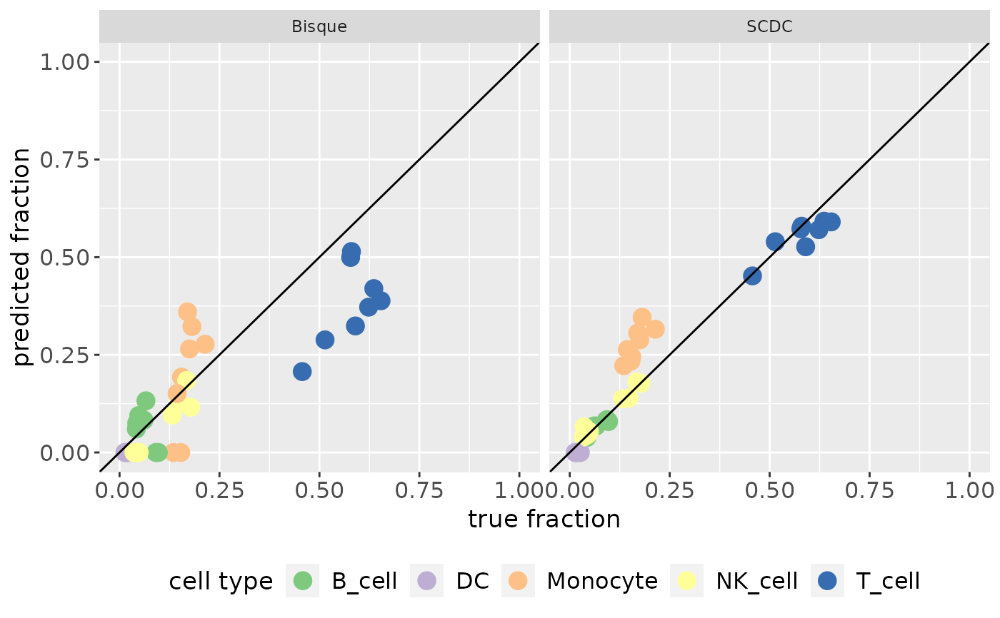

Make a Scatterplot for Benchmarking
makeBenchmarkingScatterplot(result_list, ref_data, file_name = NULL)
| result_list | named list containing all deconvolution results that should be considered, cell type annotations need to contain the same cell types as the ones in ref_data |
|---|---|
| ref_data | reference cell types which are used as the ground truth |
| file_name | (optional) plot is saved in this file |
the ggplot object
data("single_cell_data") data("cell_type_annotations") data("batch_ids") data("bulk") data("RefData") names(RefData) <- c("T_cell", "Monocyte", "B_cell", "DC", "NK_cell") sig_bisque <- build_model( single_cell_data, cell_type_annotations, "bisque", batch_ids )#>#>res_bisque <- deconvolute( bulk, sig_bisque, "bisque", single_cell_data, cell_type_annotations, batch_ids ) res_scdc <- deconvolute(bulk, NULL, "scdc", batch_ids, single_cell_object = single_cell_data, cell_type_annotations = cell_type_annotations )#> Warning: no non-missing arguments to min; returning Inf#> Warning: no non-missing arguments to min; returning Inf#> Warning: no non-missing arguments to min; returning Inf#> Warning: no non-missing arguments to min; returning Inf#> Warning: no non-missing arguments to min; returning Inf#>#>#>#>#>#>#>#>#>#>#>#>#>#>#>#>#>#>#>result_list <- list(SCDC = res_scdc, Bisque = res_bisque) result_list <- lapply(result_list, function(elem) { as.matrix.data.frame(data.frame( T_cell = rowSums(elem[, grepl("T cell", colnames(elem)), drop = FALSE]), DC = rowSums(elem[, grepl("DC", colnames(elem)), drop = FALSE]), Monocyte = rowSums(elem[, grepl("Mono", colnames(elem)), drop = FALSE]), NK_cell = rowSums(elem[, grepl("NK", colnames(elem)), drop = FALSE]), B_cell = rowSums(elem[, grepl("B cell", colnames(elem)), drop = FALSE]) )) }) makeBenchmarkingScatterplot(result_list, RefData)# Alternative if you want to save the plot in a file # makeBenchmarkingScatterplot(result_list, RefData, "predictionVsGroundtruth.png")